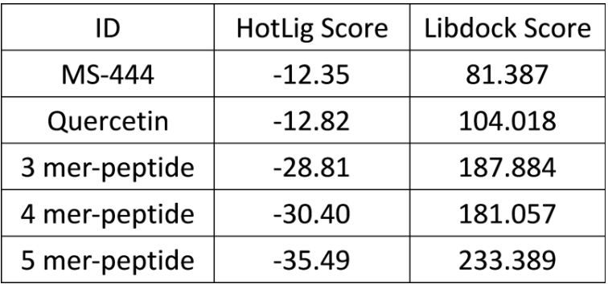

Design
Polypeptides were then chosen and designed to compete HuR’s binding site with mRNA.:
- First, the amino acids were modified with a functional group to protect polymers from easy-degradation. These amino acids include Lysine, glutamate, aspartate, phenylalanine, tyrosine, threonine, cysteine, tryptophan,…etc. [1]
- Second, the "HotLig" modeling approach [2] was used for simulation. This method has been reported to have satisfactory predictive power for binding affinities by calculation of intermolecular forces such as H-bonds, ion-pairs, metal-coordination and hydrophobic effects. After modeling analysis, the modified L-oligoglutamate*1 was predicted to have the best interaction with the RNA binding site of HuR.
- The length of the HuR binding site was then measured, which was approximately of the same length as 3 to 8 amino-acids. Via HotLig (Table. E-1), we found that the pentamer has the best binding affinity.
- Additionally, “Discovery Studio” was utilized to confirm that 3 to 8 monomers can all dock to the HuR binding site and predict its binding conformation as well. Based on the calculation of HotLig and Discovery Studio, the 5-mer was found to effectively block the HuR binding site.
- Since the designed peptide was hydrophobic, which couldn't be easily delivered in human body, a hydrophilic polymer, PEG, was used to conjugate the hydrophobic peptide (JS-1) to form copolymers (Figure. E-1). The block copolymers assembled to form nanoparticles (< 100 nm), which allows the peptide to be endocytosed by the macrophage instead of penetrating the membrane. Then we conducted in vitro fluorescence experiments to validate our hypothesis that these copolymers could be steadily transported, successfully endocytosed, and lysed by the lysosomes in the cytoplasm.
Table. E-1: HotLig score. 
Figure. E-1: The structure of the copolymer.
*: patent confidentiality
Reference:
- Lloyd-Williams, P.; Albericio, F.; Giralt, E. Chemical Approaches to the Synthesis of Peptides and Proteins; CRC Press: Boca Raton, FL, 1997
- Wang, S. H.; Wu, Y. T.; Kuo, S. C.; Yu, J. J Chem Inf Model 2013, 53, (8), 2181-95.